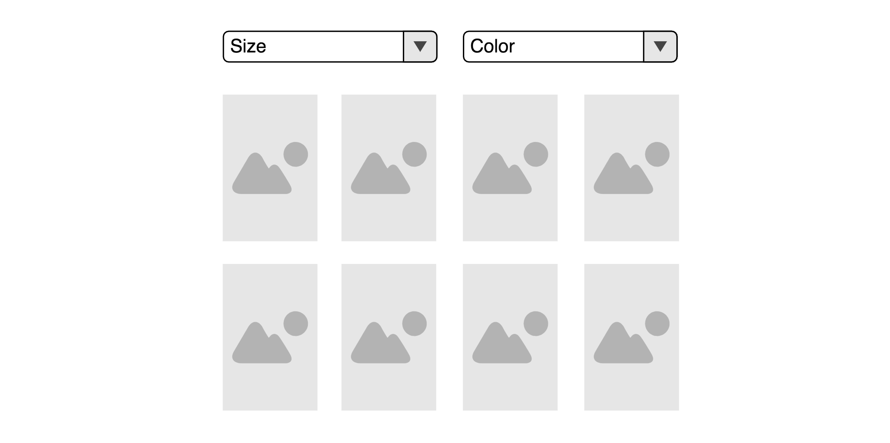

Putting all together
So far so good. You've read about a lot of different concepts. State-Events, sagas, concurrencies, cancelation, rule-nesting... It's time to put all together. The following is a really complex example, so please read the docs again if anything is not clear enough.
The Stage
We have a list of products. Each product has a size and we are able to filter our products by size. To do so the user can open up a dropdown to select one or multiple sizes:

We have products reducer that is responsible for holding the product list and managing the filters. This module exports an action-creator that can update the filters:
const SET_FILTER = 'products/SET_FILTER'
const setFilter = (filterKey, filterValue) => ({
type: SET_FILTER,
meta: { filterKey },
payload: filterValue
})
And we have a rule that fetches the new products whenever we set a filter:
addRule({
id: 'products/FETCH',
target: FETCH_PRODUCTS_REQUEST,
concurrency: 'SWITCH',
consequence: ({getState}) => {
const state = getState()
const filters = getFilters(state.products)
return api.fetchProducts(filters).then(
result => actions.fetchProductsSuccess(result),
error => actions.fetchProductsFailure(error)
)
}
})
addRule({
id: 'products/TRIGGER_FETCH',
target: [SET_FILTER, SET_PAGE, SET_CATEGORY],
consequence: () => actions.fetchProductsRequest()
})
Our FilterDropdown:
import {dispatchEvent} from 'redux-ruleset'
const FilterDropdown = ({ filterKey, filterValue, options }) => {
return (
<Dropdown
onOpen={() => dispatchEvent({ type: 'FilterDropdown/OPEN', meta: {filterKey} })}
onClose={() => dispatchEvent({ type: 'FilterDropdown/CLOSE', meta: {filterKey} })}
activeValue={filterValue}
options={options}
/>
)
}
Requirements
It is unneccessary to trigger a request while the user is still refining in the dropdown. So we only fetch when the the dropdown closes
- We do not want to trigger a request while the Dropdown is open
- When the user closes the dropdown without setting a filter we do not want to trigger a request
- As soon as the user sets one or multiple filters we trigger a request after the dropdown closes
The rule
import {addRule, skipRule} from 'redux-ruleset'
import * as productActions from 'modules/products/actions'
/*
When the user opens a filter-dropdown
Then we want to disable all product requests
and trigger one, as soon as the user refines and closes the dropdown
*/
addRule({
id: 'feature/FETCH_ON_DROPDOWN_CLOSE',
target: 'FilterDropdown/OPEN',
consequence: ({addRule, action}) => {
const {filterKey} = action.meta
const removeOnDropdownClose = function* (next) {
yield next('FilterDropdown/CLOSE')
return 'REMOVE_RULE'
}
// abort request
const abortRule = addRule({
id: 'feature/FETCH_ON_DROPDOWN_CLOSE/PREVENT_SEARCH/' + filterKey,
target: 'products/FETCH_REQUEST',
position: 'INSTEAD',
addUntil: removeOnDropdownClose,
consequence: () => null
})
// trigger request after refinement
addRule({
id: 'feature/FETCH_ON_DROPDOWN_CLOSE/TRIGGER_SEARCH' + filterKey,
target: 'FilterDropdown/CLOSE',
addWhen: function* (next) {
const action = yield next(['products/SET_FILTER', 'FilterDropdown/CLOSE'])
if(action.type === 'products/SET_FILTER'){
return 'ADD_RULE'
}
else return 'ABORT'
},
addUntil: removeOnDropdownClose,
consequence: () => {
const action = productActions.fetchProductsRequest()
return skipRule(abortRule.id, action)
}
})
}
})
Quite a few things happen here, so let's analyze this rule step by step. The target key tells us that this rule is invoked whenever a FilterDropdown/OPEN state action is dispatched. Then we want two things to happen:
- all
products/FETCH_REQUESTactions should be discarded - when the user refines, we want to fetch after the dropdown closes
To prevent all requests we add the abortRule. This rule listens to the target products/FETCH_REQUEST and totally throw it away (position INSTEAD and consequence returns null). That means that no products/FETCH_REQUEST will get dispatched as long as this rule is active. We will talk about the addUntil method later.
The next rule is resposible for fetching after the dropdown closes. The addWhen saga tells us, that we wait for two possible actions. If the user sets a filter we want to add the rule. If the user closes the dropdown we want to throw away the rule. This is important because otherwise the rule will wait in a pending status after the dropdown closes and the user did not set a filter.
When the second rule is added, it listens for the next FilterDropdown/CLOSE state event. As a consequence we will dispatch a product-request. Notice the skipRule wrapper. We skip the abortRule so the product-request actions will be dispatched and not thrown away by the abortRule.
Both rules use the same addUntil saga. The rules will be removed after the dropdown closes. You may ask yourself why we don't add the addUntil saga to the wrapper rule and return a RECREATE_RULE after the dropdown closes. Let's image the following scenario: The user opens the color dropdown sets a filter and clicks on the size dropdown. Now we would have the following actions:
- FilterDropdown/OPEN (color)
- products/SET_FILTER (color)
- FilterDropdown/OPEN (size)
- FilterDropdown/CLOSE (color)
- products/FETCH_REQUEST (color)
The open event of the size dropdown will come before the close event of the color dropdown. If we would handle the remove-logic in the addUntil saga of the root rule we would recreate the dropdown closes. Therefore the rule won't work for the size dropdown. This won't happen in the presented solution